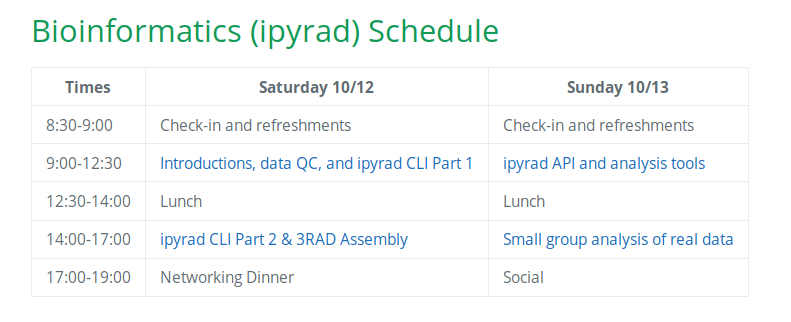
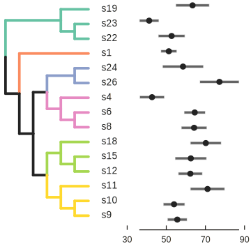
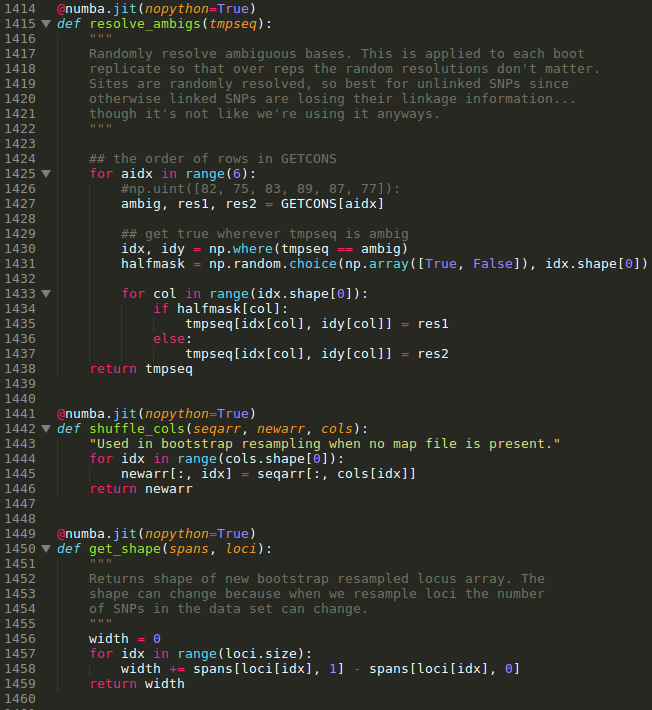
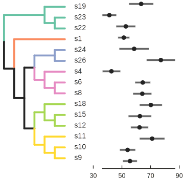
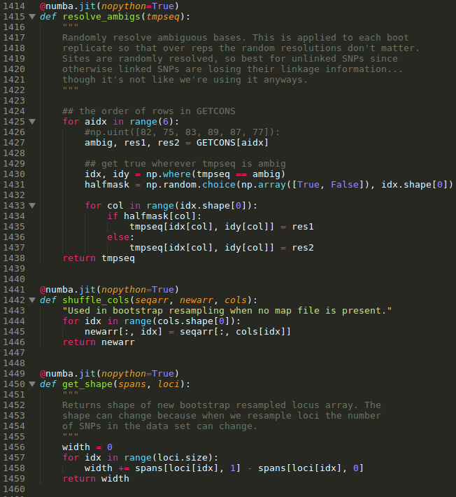
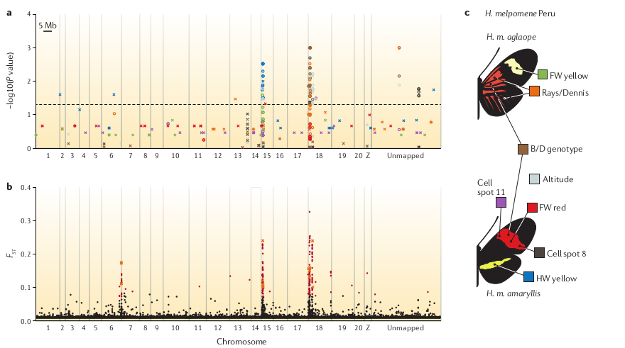
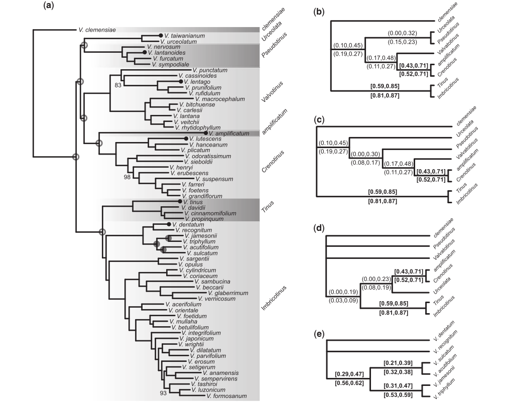

RADcamp NYC
Columbia University, 2019
Introduction to RAD and the terminal
Objectives of this workshop
1. Understand and describe the structure and format of RAD-seq data.
2. Assemble RAD-seq data sets using ipyrad to produce files for analyses.
3. Understand the use of jupyter-notebooks for reproducible analyses.
4. Create notebooks for conducting reproducible genomic analyses in Python.
Our schedule for today
Please follow along on
https://radcamp.github.io/NYC2019/

My research
Integrating collections based fieldwork, genomics, comparative methods, and bioinformatics, to study phylogeny, introgression and speciation in flowering plants.
 



Comparative genomics
And it's an exciting time for this! Genomic technologies are revolutionizing the study of ecology and evolution.

Comparative genomics
And it's an exciting time for this! Genomic technologies are revolutionizing the study of ecology and evolution.
Comparative genomics
And it's an exciting time for this! Genomic technologies are revolutionizing the study of ecology and evolution.
Comparative genomics
And it's an exciting time for this! Genomic technologies are revolutionizing the study of ecology and evolution.

Population genomic analyses
Reconstruct demography, calculate population divergence and introgression. With reference mapped data this can be done spatially along chromosomes (e.g., Nadeau et al. 2013).
Phylogenomic analyses
Infer gene trees and species trees, over shallow or relatively deep evolutionary time scales (<100 Ma); e.g., Eaton et al. 2015.
What is RAD-seq (and its variants)?
The aim of RAD-seq is select a subset (reduced representation) of orthologous genomic regions across many sampled individuals. This concentrates read coverage to regions of the genome that can be used in comparative analyses. In addition, you can multiplex many samples to attain high efficienty on Illumina machines (e.g., combinatorial indexing).
What is RAD-seq (and its variants)?
Variant methods differ in their cost, complexity, and efficiency. We used the 3RAD method, a very inexpensive and accurate new variant of RAD-seq
Frequently asked questions
Why not just sequence the entire genome at low-coverage?
Many genomes are very large and so the cost is expensive. In addition,
most population/phylogenetic questions can be answered using a subsample
of many loci from the genome.
Low coverage data can be powerful for studying very closely related
populations where missing data can be imputed, but when comparing distant
relatives it is important to obtain higher coverage per sample.
Frequently asked questions
What's the deal with missing data in RAD-seq?
Many genomes are very large and so the cost is expensive. In addition,
most population/phylogenetic questions can be answered using a subsample
of many loci from the genome.
Low coverage data can be powerful for studying very closely related
populations where missing data can be imputed, but when comparing distant
relatives it is important to obtain higher coverage per sample.
Frequently asked questions
At what phylogenetic scale can I use RAD-seq?
It depends. Different library types have different rates of
allele dropout. And other sources of missing data like seq.
coverage can be relevant too.
RAD-seq methods have been successfully applied in silico
and empirically up to ~100Ma. However, the efficiency of
RAD-seq compared to other methods is lower at this scale, and you
are often better off choosing a different method.
A strength of RAD-seq is that one type of data can be used
across many scales, from studying pedigrees to millions of years
of divergence.
A quick introduction to the command line
Lines starting with (#) are only comments, not executed
# This is the general format of unix command line tools
$ program -option1 -option2 target
# e.g., the 'pwd' program with no option or target prints your cur dir
$ pwd
/home/deren/
A quick introduction to the command line
Lines starting with (#) are only comments, not executed
# This is the general format of unix command line tools
$ program -option1 -option2 target
# The ipyrad CLI can be used in a terminal
$ ipyrad -p params-data.txt -s 123 -t 4 -c 16
Hierarchical File System
Always know where you are and where your files are.
# The root (top) of the entire filesystem (used for writing full paths).
$ /
# Here, in my current directory (used for writing relative paths).
$ ./
# Up one directory from my current directory (a relative path).
$ ../
Hierarchical File System
Always know where you are and where your files are.
Hierarchical File System
Always know where you are and where your files are.
# show the files and folders in a location (default target is cur dir)
$ ls
# show result as a list for cur dir.
$ ls -l ./
# show another location on the filesystem
$ ls -l /bin/
# move to a new location. This becomes your new cur dir.
$ cd folder/
File paths
Your location (current directory) starts from / (the root) and is described by a nested set of directory names leading to your location.
# use 'pwd' program with no option or target to ask where am I now?
$ pwd
/home/deren/
File paths
You can make new directories and change your location.
# make a new directory (mkdir is the program, genomics is the target)
$ mkdir genomics
# change directory (move) into the new directory and run pwd again
$ cd genomics
$ pwd
/home/deren/genomics